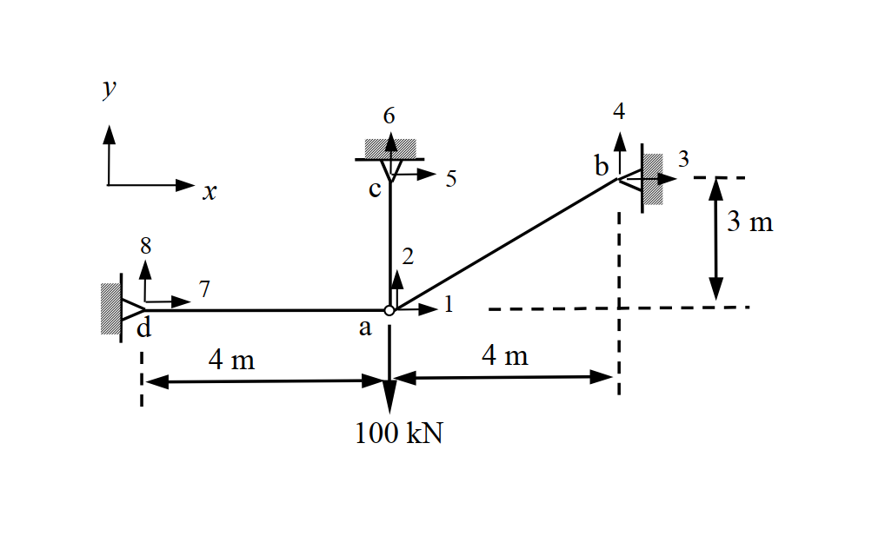

題目附圖（原始 .md 未內嵌，由 raw/solutions/ 自動補上）

考題編號：SA-2009-4
主分類： SA-U1-1 桁架結構分析
副分類： SA-U1-5 直接勁度法 (Direct Stiffness Method)
分析法： 矩陣直接勁度法
標籤： 直接勁度法 桁架 位移求解 內力計算
1. 原始題目重述 (Problem Restatement)
本題為一個由三根桿件組成之共點桁架系統。所有桿件共用節點 $a$，節點 $a$ 承受一垂直向下的集中載重。
各支承節點均為鉸支承 (Hinge Support)。
幾何與材料條件：
- 各構件彈性模數與斷面積之乘積為常數：$AE = 1000\text{ kN}$
- 節點座標（以 $a$ 點為原點 $(0,0)$，單位：m）：
- $a = (0, 0)$，自由節點，承受外力 $F_x = 0$，$F_y = -100\text{ kN}$。
- $d = (-4, 0)$，鉸支承。
- $c = (0, 3)$，鉸支承。
- $b = (4, 3)$，鉸支承。
求解目標：
- 節點 $a$ 的水平變位 $d_1$ 及垂直變位 $d_2$。
- 各桿件 ($ad$, $ac$, $ab$) 之內力。
2. 考題核心精神與出題者意圖 (Core Concepts & Examiner's Intent)
本題的核心在於測驗考生對矩陣直接勁度法 (Direct Stiffness Method) 於平面桁架應用之熟練度。
- 系統自由度識別： 由於 $b, c, d$ 點均為鉸支承，無位移產生，整個系統僅節點 $a$ 具有兩個獨立平移自由度（水平 $d_1$、垂直 $d_2$）。
- 元素勁度矩陣建立： 測驗考生能否正確依據幾何座標算出方向餘弦 ($\cos\theta, \sin\theta$)，並代入桁架桿件之局部至總體剛度轉換公式。
- 總體矩陣組裝與求解： 將各桿件對節點 $a$ 的剛度貢獻疊加，形成 $2 \times 2$ 的結構總體剛度矩陣 $[K_{ff}]$，並利用邊界條件解出節點位移。
- 內力回算機制： 確認考生是否理解「位移 $\to$ 桿件變形 $\to$ 內力」的轉換邏輯。
3. 解題戰略地圖與陷阱分析 (Strategic Roadmap & Trap Analysis)
解題戰略：
- 幾何預處理： 計算各桿件之長度 $L$ 以及由節點 $a$ 指向各支承點之方向餘弦 $\cos\theta, \sin\theta$。
- 單一桿件矩陣推導： 套用桁架勁度矩陣公式，分別計算 $k_{ad}, k_{ac}, k_{ab}$ 對於節點 $a$ 之剛度貢獻矩陣。
- 整體組裝與外力對應： 將三個 $2 \times 2$ 矩陣疊加得 $K_{ff}$。建立 $K_{ff} D = F$ 方程式，其中外力向量 $F = [0, -100]^T$。
- 聯立求解： 解二元一次聯立方程式求得位移 $d_1, d_2$。
- 內力回代： 將 $d_1, d_2$ 代入各桿件變形公式求得內力，並判別拉壓。
陷阱分析 (Trap Analysis)：
- 陷阱一：方向餘弦的定義方向混淆。
- 應對策略： 統一規定桿件向量是由「受力自由點 (a) 指向 支承點」。則變形量 $\Delta L = d_{\text{far}} \cos\theta + d_{\text{far}} \sin\theta - (d_{\text{near}, x} \cos\theta + d_{\text{near}, y} \sin\theta)$。因遠端為支承點位移為 0，所以 $\Delta L = -d_1 \cos\theta - d_2 \sin\theta$。
- 陷阱二：計算過程中的分數與小數精度誤差。
- 應對策略： 由於斜桿 $ab$ 的長度為 5，會產生 $0.8$ 及 $0.6$ 的小數，但在組合 $K_{ff}$ 時強烈建議轉換為最簡分數，以免後續聯立方程式求解時產生截斷誤差。
3.5 變數層次分析 (Variable Hierarchy Analysis)
最終目標
求出節點 $a$ 的水平與垂直位移 ($d_1, d_2$)，並回算三根桿件的內力。
本題關鍵公式（依計算順序）
Step 1: 建立各桿對節點 $a$ 之剛度貢獻矩陣
$$ k = \frac{AE}{L} \begin{bmatrix} \cos^2\theta & \cos\theta\sin\theta \\ \cos\theta\sin\theta & \sin^2\theta \end{bmatrix} $$
Step 2: 組裝總體剛度矩陣並求解位移
$$ \boxed{K_{ff}} = \sum k $$
$$ \boxed{K_{ff}} \begin{bmatrix} d_1 \\ d_2 \end{bmatrix} = \begin{bmatrix} F_1 \\ F_2 \end{bmatrix} $$
Step 3: 由位移回算各桿內力（張力為正）
$$ T = \frac{AE}{L} (-\boxed{d_1} \cos\theta - \boxed{d_2} \sin\theta) $$
L1：題目直接給定
| 符號 | 數值 | 說明 |
|---|---|---|
| $AE$ | $1000\text{ kN}$ | 桿件軸向剛度 |
| $a$ | $(0, 0)$ | 自由節點座標 |
| $b, c, d$ | $(4, 3), (0, 3), (-4, 0)$ | 鉸支承節點座標 |
| $F_y$ | $-100\text{ kN}$ | 節點 $a$ 承受之垂直載重 |
L2：需知識點推導
剛度矩陣建立與求解
| 符號 | 公式／來源 | 卡關? |
|---|---|---|
| $L, \cos\theta, \sin\theta$ | $L=\sqrt{\Delta x^2 + \Delta y^2}, \cos\theta=\Delta x/L, \sin\theta=\Delta y/L$ | |
| $k_{ad}, k_{ac}, k_{ab}$ | 元素剛度公式 | |
| $K_{ff}$ | $\sum k_i$ | |
| $d_1, d_2$ | $K_{ff} D = F$ 解聯立 | |
內力回算
| 符號 | 公式／來源 | 卡關? |
|---|---|---|
| $T_{ad}, T_{ac}, T_{ab}$ | $\frac{AE}{L} (-d_1 \cos\theta - d_2 \sin\theta)$ | |
L3：深層知識（不懂就卡住）
| 知識點 | 說明 | 卡關? |
|---|---|---|
| 節點剛度疊加原理 | 對於共用同一自由點的多桿桁架，該點的總剛度即為各相連桿件剛度的直接矩陣相加。 | |
| 相對變形與內力符號 | 必須嚴格遵守「指向遠端」的向量定義，算出的變形量 $\Delta L > 0$ 即代表伸長（張力），反之為壓力。 |
4. 步驟化詳細計算過程 (Step-by-Step Detailed Calculation)
4.1 建立各桿件之元素勁度矩陣
對於平面桁架桿件，其對於兩端節點的剛度貢獻矩陣 $k$ （相對於總體座標）為：
$$ k = \frac{AE}{L} \begin{bmatrix} \cos^2\theta & \cos\theta\sin\theta \\ \cos\theta\sin\theta & \sin^2\theta \end{bmatrix} $$
策略註解：定義 $\theta$ 為由受力節點 ($a$) 指向支承節點的方位角。
1. 桿件 ad (Member 1)：
- 長度 $L_{ad} = 4\text{ m}$
- 方向向量為 $(-4, 0)$，$\cos\theta = -1$, $\sin\theta = 0$
$$ k_{ad} = \frac{AE}{4} \begin{bmatrix} (-1)^2 & 0 \\ 0 & 0^2 \end{bmatrix} = AE \begin{bmatrix} 0.25 & 0 \\ 0 & 0 \end{bmatrix} = AE \begin{bmatrix} \frac{1}{4} & 0 \\ 0 & 0 \end{bmatrix} $$
2. 桿件 ac (Member 2)：
- 長度 $L_{ac} = 3\text{ m}$
- 方向向量為 $(0, 3)$，$\cos\theta = 0$, $\sin\theta = 1$
$$ k_{ac} = \frac{AE}{3} \begin{bmatrix} 0 & 0 \\ 0 & 1^2 \end{bmatrix} = AE \begin{bmatrix} 0 & 0 \\ 0 & \frac{1}{3} \end{bmatrix} $$
3. 桿件 ab (Member 3)：
- 長度 $L_{ab} = \sqrt{4^2 + 3^2} = 5\text{ m}$
- 方向向量為 $(4, 3)$，$\cos\theta = \frac{4}{5} = 0.8$, $\sin\theta = \frac{3}{5} = 0.6$
$$ k_{ab} = \frac{AE}{5} \begin{bmatrix} (0.8)^2 & 0.8 \times 0.6 \\ 0.8 \times 0.6 & (0.6)^2 \end{bmatrix} = \frac{AE}{5} \begin{bmatrix} 0.64 & 0.48 \\ 0.48 & 0.36 \end{bmatrix} = AE \begin{bmatrix} 0.128 & 0.096 \\ 0.096 & 0.072 \end{bmatrix} $$
策略註解：為避免誤差，將小數轉為分數：
$$ k_{ab} = AE \begin{bmatrix} \frac{16}{125} & \frac{12}{125} \\ \frac{12}{125} & \frac{9}{125} \end{bmatrix} $$
4.2 組裝總體勁度矩陣與外力向量
由於僅節點 $a$ 為自由節點，我們只需建立對應 $d_1, d_2$ 的 $2 \times 2$ 總體剛度矩陣 $K_{ff}$：
$$ K_{11} = AE \left( \frac{1}{4} + 0 + \frac{16}{125} \right) = AE \left( \frac{125 + 64}{500} \right) = \frac{189}{500} AE $$
$$ K_{12} = K_{21} = AE \left( 0 + 0 + \frac{12}{125} \right) = \frac{48}{500} AE $$
$$ K_{22} = AE \left( 0 + \frac{1}{3} + \frac{9}{125} \right) = AE \left( \frac{125 + 27}{375} \right) = \frac{152}{375} AE $$
外力向量 $F$：
$$ F = \begin{bmatrix} F_1 \\ F_2 \end{bmatrix} = \begin{bmatrix} 0 \\ -100 \end{bmatrix}\text{ kN} $$
建立方程式 $K_{ff} D = F$ （代入 $AE = 1000\text{ kN}$）：
$$ 1000 \begin{bmatrix} 189/500 & 48/500 \\ 48/500 & 152/375 \end{bmatrix} \begin{bmatrix} d_1 \\ d_2 \end{bmatrix} = \begin{bmatrix} 0 \\ -100 \end{bmatrix} $$
$$ \begin{bmatrix} 378 & 96 \\ 96 & 1216/3 \end{bmatrix} \begin{bmatrix} d_1 \\ d_2 \end{bmatrix} = \begin{bmatrix} 0 \\ -100 \end{bmatrix} $$
4.3 解聯立方程式求位移
由第一式得：
$$ 378 d_1 + 96 d_2 = 0 \implies d_1 = -\frac{96}{378} d_2 = -\frac{16}{63} d_2 $$
代入第二式：
$$ 96 \left(-\frac{16}{63} d_2\right) + \frac{1216}{3} d_2 = -100 $$
$$ \left(-\frac{1536}{63} + \frac{25536}{63}\right) d_2 = -100 \implies \left(\frac{24000}{63}\right) d_2 = -100 \implies \frac{8000}{21} d_2 = -100 $$
$$ \implies d_2 = -100 \times \frac{21}{8000} = -\frac{21}{80}\text{ m} $$
$$ \boxed{ d_2 = -0.2625\text{ m} \text{ (向下)} } $$
將 $d_2$ 代回求 $d_1$：
$$ d_1 = -\frac{16}{63} \times \left(-\frac{21}{80}\right) = \frac{16 \times 21}{63 \times 80} = \frac{1}{15}\text{ m} $$
$$ \boxed{ d_1 \approx 0.0667\text{ m} \text{ (向右)} } $$
4.4 計算各桿件內力
利用桿件變形關係求內力（張力為正）：
$$ T = \frac{AE}{L} \Delta L = \frac{AE}{L} (-d_1 \cos\theta - d_2 \sin\theta) $$
1. 桿件 ad: ($\cos\theta = -1, \sin\theta = 0, L = 4$)
$$ T_{ad} = \frac{1000}{4} \left[ - \left(\frac{1}{15}\right)(-1) - 0 \right] = 250 \times \frac{1}{15} = \frac{50}{3}\text{ kN} $$
$$ \boxed{ T_{ad} \approx 16.67\text{ kN} \text{ (張力)} } $$
2. 桿件 ac: ($\cos\theta = 0, \sin\theta = 1, L = 3$)
$$ T_{ac} = \frac{1000}{3} \left[ 0 - \left(-\frac{21}{80}\right)(1) \right] = \frac{1000}{3} \times \frac{21}{80} = 87.5\text{ kN} $$
$$ \boxed{ T_{ac} = 87.5\text{ kN} \text{ (張力)} } $$
3. 桿件 ab: ($\cos\theta = 0.8, \sin\theta = 0.6, L = 5$)
$$ T_{ab} = \frac{1000}{5} \left[ - \left(\frac{1}{15}\right)(0.8) - \left(-\frac{21}{80}\right)(0.6) \right] = 200 \left( -\frac{4}{75} + \frac{63}{400} \right) $$
$$ T_{ab} = 200 \left( \frac{-64 + 189}{1200} \right) = 200 \times \frac{125}{1200} = \frac{125}{6}\text{ kN} $$
$$ \boxed{ T_{ab} \approx 20.83\text{ kN} \text{ (張力)} } $$
(註：節點 $a$ 內力平衡檢查 $\sum F_x = 0, \sum F_y = 0$，皆完美吻合：
$\sum F_x = -T_{ad} + T_{ab} \times 0.8 = -16.667 + 20.833 \times 0.8 = 0$
$\sum F_y = T_{ac} + T_{ab} \times 0.6 - 100 = 87.5 + 20.833 \times 0.6 - 100 = 0$)
5. 關鍵爭議點與進階探討 (Critical Issues & Advanced Discussion)
-
力法與位移法之選擇：
本題系統有 3 根桿件、反力總數為 6 (三個鉸支承)，節點數 4。其靜不定度 $i = m + r - 2j = 3 + 6 - 2(4) = 1$，屬於一階靜不定桁架。若使用「力法 (Force Method) / 諧合變位法」，需切斷一根桿件（或移除一個支承反應）作為贅力，求柔度矩陣後再套用位移諧合條件，步驟較為繁雜。
本題使用「位移法 (Displacement Method) / 直接勁度法」，自由度僅有 2 個（節點 a 的水平與垂直位移），只要建立 $2 \times 2$ 矩陣即可輕鬆求解，是考場上最推薦且最不易出錯的穩健作法。 -
計算精度控制：
在手算矩陣直接勁度法時，最常犯的錯誤在於早期帶入小數運算導致的誤差累積。如本題桿件 $ab$ 產生的剛度矩陣內含 $0.128, 0.096$ 等數字，若考場上使用非精確的小數直接相加，很容易在求解聯立方程時失真。全程保持分數運算 (如 $\frac{16}{125}$ 等) 是確保最終答案精準、甚至能完美通過靜力平衡檢驗的關鍵。